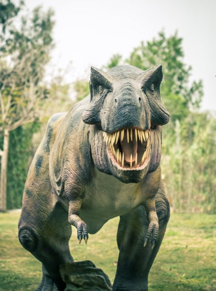
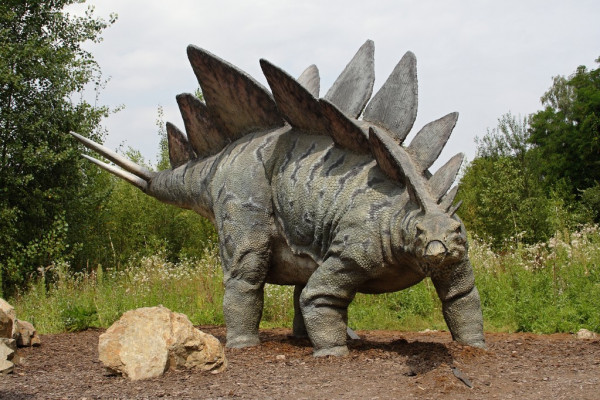
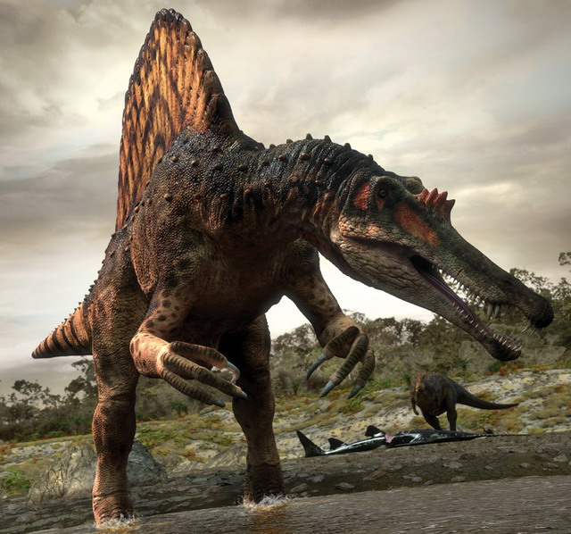

Tyrannosaurus é um gênero de dinossauros terópodes celurossauros que viveram durante o final do período cretáceo, há aproximadamente 66 milhões de anos, em toda a região que hoje é a América do Norte. O único representante do gênero é Tyrannosaurus rex, que ganhou o epíteto específico de rex, por ser o maior dinossauro carnívoro conhecido quando foi descoberto.
Assim como outros representantes da família Tyrannosauridae, o T. rex foi um carnívoro bípede com um crânio cilíndrico e uma grossa e musculosa cauda. Suas pernas eram longas e musculosas, mas seus braços eram extremamente curtos e finos, além desses animais também possuírem três dedos ao fim de cada perna e dois dedos nos braços. Na idade adulta um T. rex poderia atingir cerca de 4 metros de altura e 12 metros de comprimento. Seu crânio podia passar de 1,4 metro, e sua massa podia passar de 8 toneladas. As fêmeas eram maiores que os machos. Um recente estudo comprova que tinha a mordedura mais poderosa do planeta; sua mordida exercia uma pressão de 6 toneladas. Tinha 60 dentes com mais de 20 centímetros cada um. Estima-se também que suas musculosas pernas permitiam que o animal atingisse uma velocidade superior a quarenta quilômetros por hora em uma corrida livre. Hoje, há mais de trinta esqueletos de tiranossauros totalmente remontados, e é exactamente essa abundância de material fóssil disponível que permitiu que esses animais fossem profundamente estudados para se descobrir os principais aspectos de sua biomecânica, apesar de que sua fisiologia e seus hábitos diários ainda são frutos de debate até hoje.

Stegosaurus ou estegossauro (pronúncia em português: /iʃtɛɡɔˈsawru/)[1] é um gênero de dinossauros herbívoros tireóforos. Os fósseis deste gênero datam do período Jurássico Superior, do período Kimmeridgiano aos primeiros estratos envelhecidos do Tithoniano, entre 155 e 148 milhões de anos atrás, no oeste dos Estados Unidos e em Portugal. Das espécies que foram classificadas da parte superior da Formação Morrison no oeste dos Estados Unidos, apenas três são universalmente reconhecidas; S. stenops, S. ungulatus e S. sulcatus. Foram encontrados os restos mortais de mais de 80 animais desse gênero. Stegosaurus teria vivido ao lado de dinossauros como Apatosaurus, Diplodocus, Brachiosaurus, Allosaurus e Ceratosaurus; os dois últimos podem ter sido predadores do gênero.
Eles eram grandes herbívoros quadrúpedes com costas arredondadas, fortemente equipados, tinham membros anteriores curtos, membros posteriores longos e tinham caudas erguidas no ar. Devido à sua combinação distinta de placas largas e verticais e cauda pontiaguda com pontas, o Stegosaurus é um dos mais facilmente reconhecíveis dinossauros. A função desse conjunto de placas e pontas tem sido objeto de muita especulação entre os cientistas. Hoje, é geralmente aceito que suas caudas pontiagudas tenham sido mais provavelmente usadas para defesa contra predadores, enquanto que suas placas poderiam ter sido usadas principalmente para exibição, e secundariamente para funções termorreguladoras. Stegosaurus tinha uma proporção cérebro-massa corporal relativamente baixa. Tinha um pescoço curto e uma cabeça pequena, o que significa que ele provavelmente comia arbustos e moitas. Uma espécie, Stegosaurus ungulatus, é a maior entre todos os estegossauros conhecidos[nota 1] (maior até do que outros dinossauros relacionados como Kentrosaurus e Huayangosaurus).

O Espinossauro (Spinosaurus aegyptiacus cujo nome significa Lagarto Espinho) foi uma espécie de dinossauro carnívoro que andava como um quadrúpede e como um bípede, era retratado como um bípede antes por causa do filme Jurassic Park 3 de 2001, mas novas descobertas dizem que se locomovia mais em posição quadrúpede em terra firme. Ele viveu durante o período Cretáceo, principalmente na região que é hoje o norte da África. Foram também descobertos dentes e vértebras de espinossaurídeos no Brasil tais como o Oxalaia quilombensis e o Irritator challengeri, especialmente na região que atualmente corresponde ao estado do Ceará.
O Espinossauro foi o maior dinossauro terópode que já existiu, com adultos medindo em torno de 6 metros de altura, no máximo e 15[1] metros de comprimento e pesando possivelmente até 7 toneladas. Possuíam grandes prolongações espinhais nas vértebras de suas costas, as maiores podendo chegar a 2 metros o que lhe conferiu o nome de "lagarto espinho". Esses prolongamentos são recobertos por uma pele fina. Os cientistas cogitam como possíveis funções (independentes, mas não mutuamente exclusivas) dessa vela dorsal, a termorregulação (armazenando o calor do sol, dando-lhe a vantagem de ser mais ágil que os outros répteis), exibição (sexual ou para intimidação de rivais) ou apenas um efeito visual durante o nado. Seus braços e sua mandíbula eram extremamente longos que serviam para pegar grandes peixes. Ele foi o primeiro dinossauro semi-aquático a ser descoberto